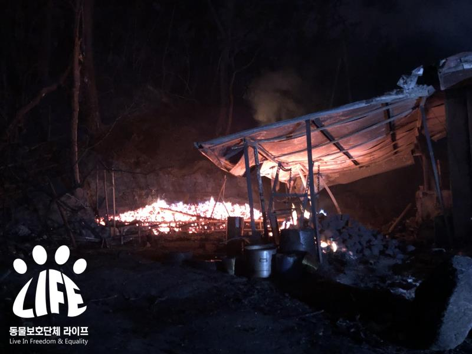

[Activity Report] Emergency! Whamma-stricken Crying Area Rescue Efforts-2
Registration Date Author Life Attachment activitydata_02_04 {kind=link}
By evening, the flames were back in the air.
I began to whirl around the wool.
In an unexpected situation
My heart became more impatient.
On the flames that continue down to the village,
Life also has the remaining animals in the village
I checked and moved my seat.
On the way,
Sitting alone on top of a truck
Found a retriever.
Probably avoid a sudden smeared fire
It seemed that I had been evacuated with the owner.
There's not much you can do right away.
He gave me water, and I gave him a decapitation.
Is your throat dry a lot?
He drank the water in a frenzy.
Fortunately, the family was not far away.
Escaping the flames and staying calm on top of the truck
The name of the retriever was "Springtime".
Take the water,
While waiting for the family
"Spring" leans on life activists
I completely surrendered myself.
The moment is still vivid.
Circling the streets for a long time
A hard and exhausting life is
I felt comforted at that moment.
Rescue efforts until the next day
It continued.
Spinning around the place,
While searching for animals in crisis,
Dangerously crossing the driveway
Dog chasing a car
I found one.
Although it is not the victim of burns,
If chasing a car is self-inflicted
Because it can lead to accidents
I ran to where the child was.
fortunately
The child had a registration chip,
Subsequently at the Uljin Animal Care Center
Check your family's contact details
I was able to take over safely.
In addition
Where the house was burned down by a wreath
Found 3 dogs.
This place is for kids
Can't escape the flames
Burned nose and feet, etc.
It was found tanned.
fortunately
With the help of a neighbor's resident
I was in touch with my family,
Because the house was burned down altogether.
The kids had nowhere to go right away.
Because it was a burned individual.
In the hospital, it is judged that the treatment is a priority.
Life Urgently
Decided to rescue.
Among the children rescued in Uljin
Some returned to the arms of their families.
The house is burned down.
Children who need care right away
Life is temporarily protected
To this day
Burn treatment is in progress.
Life Even After
Visit Uljin once again
Uljin County Shelter with Yumpah
I also took time for a walk with the kids,
Supplies needed for the Uljin County Shelter
We decided to pass some of them on.
In addition
Caring for stray cats
For Volunteers
Supports 2 tons of stray cat food,
Treatment of injured cats and
cremation of cadavers,
Kitten Care etc.
I promised.
At the Uljin County Shelter
Some of the items you need are
From Hyponic
He has decided to support you,
2 tons of stray cat food
We have arrived well in Uljin at the moment.
Due to this wildfire fire
It is not only the people who have been harmed, but also the people who have been harmed.
The same was true of the animals.
As you've seen in many media outlets,
For animals in the event of a disaster
The evacuation manual is still
None.
To change this situation:
It needs the attention of many people.
How to Evacuate
A petition to the Blue House for an amendment is underway.
Many of you
Thank you for your interest and participation.
In addition
Uljin County Shelter
Kids are waiting for the family.
This place is in excess of the number of objects
This is where euthanasia takes place.
So that even one more child can go for adoption
I hope you care a lot.
▼ Blue House petition permalink ▼
https://www1.president.go.kr/petitions/604612▼ Uljin County Shelter Adoption Inquiry ▼
https://www.instagram.com/uljin_happydog/▼ Sponsoring an animal protection organization Life ▼

Agricultural Cooperative Bank Division Corporation Animal Protection Group Life
301-0297-1794-11
Receipts for group and individual donations can be issued.
Life without government support
It operates only with the support of citizens.
Animals and people coexist
We will create the world.
(a) Animal Protection Group Life